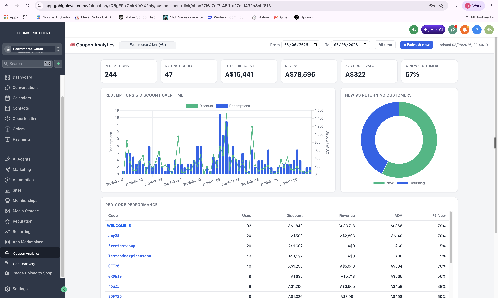

Case study · GoHighLevel
A revenue-recovery engine, built right inside the store's CRM
For an established Australian ecommerce store, I turned their GoHighLevel account into an always-on revenue engine — automatically winning back abandoned carts, running lifecycle SMS to every customer, and tracking every dollar that coupon codes bring in through a custom dashboard I built inside the platform.
The revenue was leaking in the gaps
A busy online store makes sales all day — but the money it doesn't capture is invisible. Carts get abandoned at checkout and never followed up. Customers buy once and never hear from the brand again. Discount codes go out the door with no idea which ones actually drive revenue versus which ones just give margin away.
None of that is a marketing problem you can fix by hand at volume. It needs systems that run every hour of every day, quietly, without anyone remembering to press go. So that's what I built — natively inside the CRM the business already runs on.
What I built
Three systems, one CRM — each one plugging a different revenue leak.
Abandoned-cart recovery
The moment a shopper leaves a cart behind, they enter an automated SMS pipeline that follows up, tracks their stage, and marks the cart as won the instant they come back and buy — with a live dashboard on the recovered revenue.
Always-on lifecycle SMS
Half a dozen published automations run the whole customer journey — post-purchase follow-ups, win-backs for lapsed buyers, sunset flows and more — each triggering off real store activity, no manual sends.
Custom coupon analytics
A purpose-built dashboard, embedded straight into the CRM, that shows exactly what every discount code earns — revenue, redemptions, average order value and the share of new vs returning customers, per code.
The proof
Inside the real CRM
These are live screenshots from the store's own GoHighLevel account. Every client-identifying detail — brand name, logo, website and customer contact details — is redacted. All the revenue figures are real and untouched.
Every discount code, measured to the dollar
A custom analytics view I built inside the CRM. It turns a pile of coupon codes into a clear picture of what actually drives revenue — so the business can double down on the codes that pay and kill the ones that just leak margin.

Carts won back — and counted
A live recovery-performance view showing what the automation actually rescues. Every abandoned cart the system opens is tracked through to a purchase, so the recovered revenue is attributed, not guessed.

Recovery you can watch happen
The recovery pipeline in motion. Each abandoned cart moves through the stages automatically — from abandonment, to SMS sent, to purchased — with the dollar value on every card, so nothing slips through unnoticed.

The always-on flows behind it all
The published automations doing the work around the clock — abandoned-checkout follow-ups, post-purchase sequences, win-backs and more. Thousands of contacts have already been enrolled and worked, entirely hands-off.

How the engine works
From a store event to money recovered — end to end, inside GoHighLevel.
-
Store events flow in
The Shopify store and the CRM are wired together, so real events — an abandoned checkout, a purchase, a lapsed customer — trigger the right automation the moment they happen. No exports, no manual imports.
-
The right message goes out
Each contact enters the automation that fits their moment — cart recovery, post-purchase, win-back. Timed SMS does the follow-up a person never has the hours to, and the sequence stops the instant they act.
-
Every cart is tracked to the sale
Recovery opportunities move through the pipeline automatically and get marked WON when the customer comes back and buys — so recovered revenue is attributed with a real dollar figure, not estimated.
-
Everything reports back
Recovered revenue, coupon performance and enrolment all surface in dashboards inside the CRM the team already uses — so the impact is visible without logging into anything else.
Why it pays for itself
Every one of these systems recovers revenue the business was already leaving on the table — carts that were abandoned anyway, customers who'd have gone quiet, discount spend that was flying blind. The store keeps making its sales; this just catches the ones that used to slip.
And because it all lives inside the CRM they already pay for and run on, there's no new tool for the team to learn and nothing sitting in a black box off to the side. It runs whether anyone's watching or not.
Built to run unattended
- Triggers off real store events, not manual sends
- Sequences stop the moment a customer acts
- Recovered revenue attributed, not estimated
- Runs 24/7 with no one pressing go
All in one place
- Native to the store's existing GoHighLevel CRM
- Dashboards embedded right where the team works
- Coupon revenue measured per code
- No extra software for anyone to learn
Running a store that's leaking revenue in the gaps?
Abandoned carts, one-and-done customers, discount spend you can't measure — there's revenue in all of it worth recovering. Let's talk about what an engine like this would look like for your store.
Book a callOr email harshan@flowlamina.com